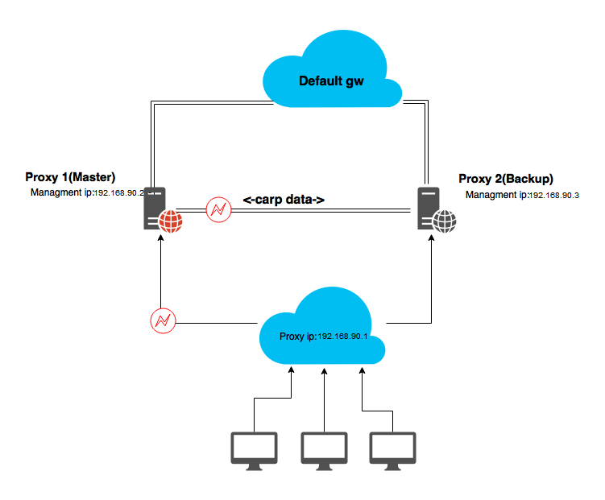
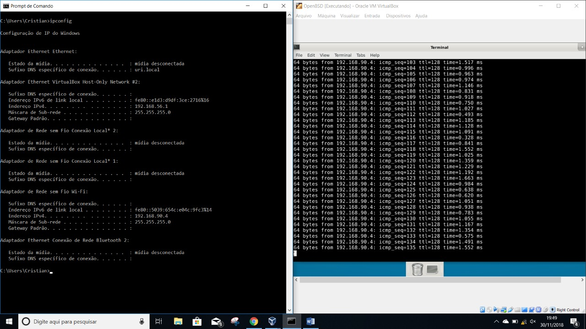

Imagens
- 
- 
-

CARP (Common Address Redundancy Protocol) é um protocolo que permite que múltiplos hosts (até 255) em uma rede local compartilhem de um mesmo endereço IP. Algumas de suas funcionalidades são similares ao VRRP, mas o CARP difere em alguns aspectos significantes: CARP foi desenhado para prover segurança e ser um protocolo independente (assim ele pode suportar IPv4 e IPv6), pode-se trabalhar com load balancing e com isto alta disponibilidade.
Após tudo configurado, carregamos o site no ip "192.168.90.1" e disparamos o ping de um computador externo nesse mesmo ip, cancelamos a conexão do servidor master com o site, e o servidor backup assumiu, mantendo o site ativo e tornando-se servidor principal.
Basicamente a utilidade do protocolo CARP é aumentar a disponibilidade do serviço, ou seja, garantir que em um possível esgotamento de recurso de hardware ou quebra no serviço master o servidor backup irá restabelecer, garantindo a alta disponibilidade de forma transparente.